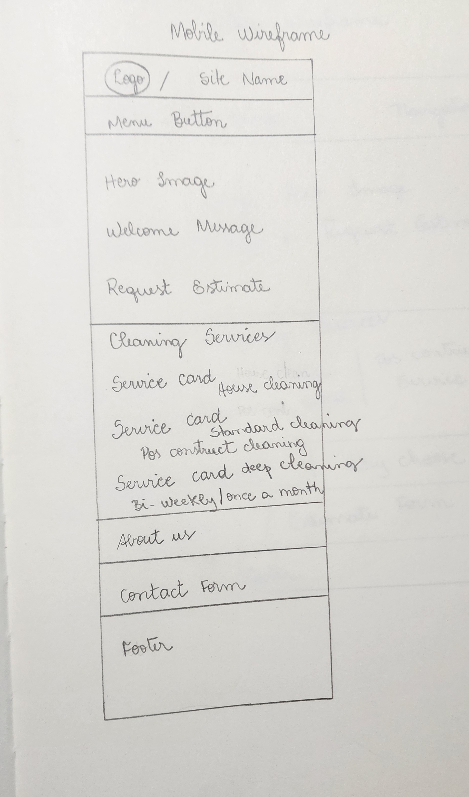
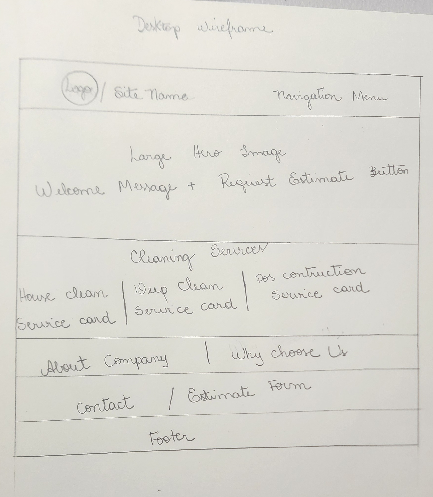

Dark Teal
#1F4E5F
This color will be used for the header, footer, headings, buttons, and important design elements.
Individual Project Site Plan
The name Bright Home Cleaning was selected because it communicates the goal of the business: helping customers maintain clean, fresh, and comfortable homes. The word “bright” represents cleanliness, freshness, and a positive home environment.
Optional domain: brighthomecleaning.com
The purpose of the Bright Home Cleaning website is to provide information about residential cleaning services. Visitors will be able to learn about the different cleaning options, view service details, and request a cleaning estimate.
The website will offer information about regular house cleaning, deep cleaning, move-in and move-out cleaning, kitchen cleaning, bathroom cleaning, and other customized cleaning services.
#1F4E5F
This color will be used for the header, footer, headings, buttons, and important design elements.
#EAF6F6
This color will be used for page backgrounds, sections, service cards, and other light design areas.
#F4A261
This accent color will be used for call-to-action buttons, links, icons, and highlighted information.
Poppins will be used for the site name, headings, navigation links, buttons, and important titles.
Open Sans will be used for paragraphs, service descriptions, contact information, forms, and other body content.
The following wireframes show the planned structure of the home page for mobile and larger screens.

